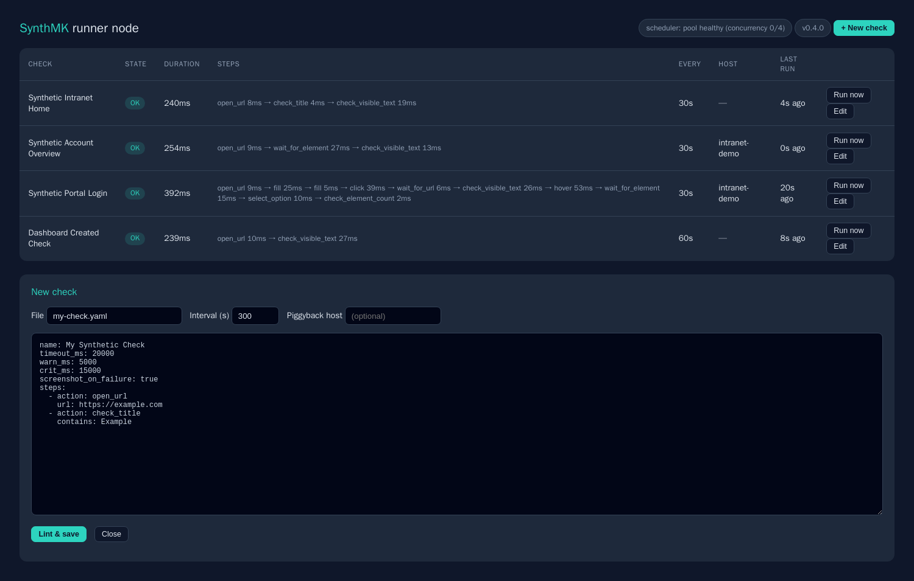

SynthMK replays real browser journeys (sign in, search, check out) from a hardened runner inside your network, and reports each one as a native Checkmk service with thresholds, graphs and alerts. No Robot Framework, no per-test subscription, no traffic leaving your network.

Authoring
Whoever owns the application can own its check. No test-automation team is required, and there is no ceiling for the people who want code.
Click through the journey once. The browser extension (Chrome, Edge, Firefox) captures every step into readable YAML, and records password fields as secret references, never the value. No extension policy? Export a recording from Chrome DevTools Recorder and import the JSON: every Chrome is already a recorder.
The node dashboard includes a no-code step builder: open a live preview of the page, click an element, pick the action: click, enter text, fill a login from secrets, select a dropdown option, or assert what must be on screen. The output is the same YAML, lint-checked before it saves.
Flows are plain YAML files, short enough to diff and review in a pull request like any other config. And when declarative steps are not enough, power users can ship full Playwright Python scripts as checks, behind an explicit operator trust gate.
Architecture
Three pieces, each doing one job. Checkmk stays the single pane of glass; the runner node stays inside your network perimeter.
Record, build, or write a flow. Either way the artifact is the same: a short YAML file you can read in thirty seconds, review in a pull request, and keep in git.
The runner node executes every flow on its own interval with a real browser and publishes results to a spool, so agent polls answer in under half a second no matter how slow the journeys are.
The native plugin renders every journey as a first-class Checkmk service: state, duration with thresholds you can override from Setup, per-step metrics, and a failure screenshot link.
Capabilities
The person writing the check, the person running the node, and the person who has to sign off on both.
Extension for Chrome, Edge and Firefox with a live editable step list, assertions and thresholds, plus Chrome DevTools Recorder JSON import, so authoring needs no install at all.
Any step can carry multiple locators tried in order. When a frontend deploy renames an ID, the check keeps passing on the text or role selector instead of paging someone at 03:00.
Text visible, text absent, title, URL, element count, element attribute, checkbox state. Failures produce a plain sentence like “Expected text 'Dashboard' not found” instead of a stack trace.
Define the login sequence once and include it from every journey that needs it. Change the login page, update one file.
wait_for_element, wait_for_url, wait_for_network_idle, optional: true for consent banners, per-step timeouts, and a hard run timeout behind it all.
Declarative YAML covers the common 90%. For the rest, ship a Playwright Python script as a check: same service output, same screenshots, gated by the operator.
Browsers pre-installed, scheduler, dashboard and screenshot server in a single image. No per-host environment builds, nothing to assemble on the probe.
A real check plugin (discovery, unit-aware duration graphs with threshold bands, perf-o-meter, per-step metrics) and a Setup ruleset, so thresholds are a Checkmk rule rather than a file edit on the node.
Live states with per-step timings, one-click run-now, pause/resume, tags for grouping, and a flow editor that lints before every save, so invalid YAML never lands on disk.
Every flow edit through the dashboard is versioned. A bad change is one click away from the previous known-good revision, and the audit log records who changed what, when.
Worker pool with stagger, overlap suppression and hard timeouts. Measured: 60 flows, ≈37 runs/min sustained on one default node, zero overdue.
If the node is oversubscribed, the SynthMK Scheduler service goes WARN on the node, and your monitored applications never show false CRITs because the probe is busy.
Credentials live in a chmod-600 file on the node. Loose permissions are refused at startup. Flows reference {{ secret.name }} by name; resolved values are scrubbed from every output, log and error message.
Typing into a password field records a secret reference and a sensitive flag. The value never enters the extension, the YAML, or the screenshots; fields are masked before capture.
{{ totp.name }} generates RFC 6238 codes from a base32 seed in the same protected secrets file, so you can monitor MFA-enforced logins without weakening the account.
Screenshots are served with per-file HMAC tokens. No listing, no traversal. The dashboard sits behind token sign-in with CSRF protection and constant-time comparisons.
Browsers run as an unprivileged user, the shipped compose sets memory/CPU limits and no-new-privileges, and the agent transport supports certificate-based TLS via the official Checkmk controller.
Arbitrary Playwright code on a probe is remote code execution by design, so it ships disabled. The operator must explicitly enable a trusted scripts directory before any code check runs.
Positioning
Checkmk's official synthetic monitoring is built on Robot Framework and sold with commercial editions. SynthMK serves the teams underneath that line. Here is the difference, stated factually.
| Checkmk Synthetic Monitoring (Robotmk) | SynthMK | |
|---|---|---|
| Checkmk edition | Commercial editions, separate per-test subscription | Raw / CRE, free and MIT-licensed |
| Engine | Robot Framework keyword suites | Playwright, driven by readable YAML |
| Authoring | Hand-written .robot files | Record, visual builder, YAML, or Playwright code |
| Probe environment | RCC environment builds per test host | One pre-baked container, browsers included |
| Credentials | Environment variables, plaintext in agent config | 0600 secrets file, output-redacted, screenshot-masked |
| Per-step visibility | Keyword-level services (rich) | Per-step metrics and breakdown on every service |
| Check management | Bakery rules and suite redeploys | Web dashboard: edit, lint, run-now, pause, roll back |
Quickstart
One container on your network, one MKP on your Checkmk site, one host entry. That is the whole install.
# 1. the runner node (any Docker host inside your network) git clone https://github.com/GranusClarvis/SynthMK.git && cd SynthMK docker build -f runner-node/Dockerfile -t synthmk-runner . docker run -d --name synthmk-runner \ -p 6556:6556 -p 9180:9180 -p 9181:9181 \ -v "$PWD/flows:/opt/synthmk/flows" \ -e SYNTHMK_SHOT_BASE_URL="http://<node-lan-ip>:9180" \ synthmk-runner # 2. the Checkmk plugin (on your site) mkp add synthmk.mkp && mkp enable synthmk # 3. add the node as a host in Checkmk, run service discovery. # Every flow appears as a service with graphs, thresholds and alerts included.
http://<node>:9181 and sign in with the admin token.Evidence
Every release is verified end-to-end against a self-hosted Checkmk Raw 2.3 lab before it ships. These captures are from that lab, nothing staged.



The native check plugin, Setup ruleset, graph definitions and runner payload. Install via mkp add or Setup → Extension packages.
The recorder extension for Chrome and Edge (one package) or Firefox. Load via your browser's developer mode; store listings are on the roadmap. Or skip it: Chrome DevTools Recorder JSON imports directly.
Chrome / Edge .zipThe appliance builds from source in one command, with pinned Playwright and browsers included. A hardened compose template ships in runner-node/.